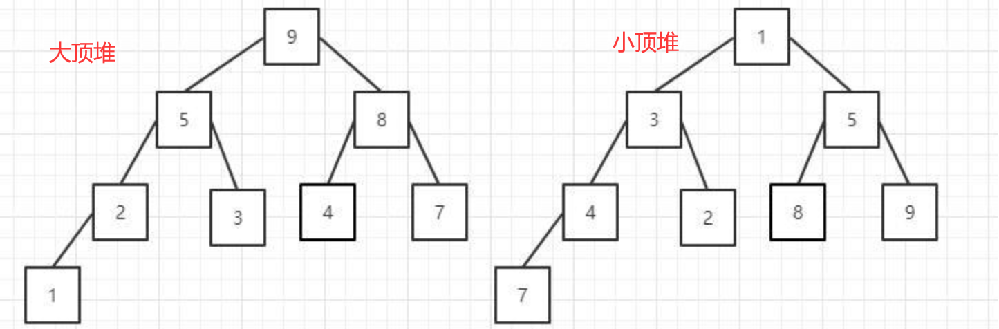

1.直接插入排序
1.1 思路
- 把序列划分为有序序列和无序序列，每次从无序序列中，取出一个元素，然后遍历整个有序序列，和从无序序列中取出的元素进行比较，确定元素在有序序列中的位置，然后插入到有序序列中
- 在插入第 i 个元素时，前 i-1个元素已经排好序，是一个有序序列
- 将第 i 个元素和前 i-1个元素比较大小，找到属于第 i 个元素的位置插入，将此位置及其之后的元素依次向后移动
- 从序号为1的元素开始比较插入，序号为0的元素是序列的第一个数据，可以看作是一个只有一个元素的有序序列
1 | {7,3,1,4,2,6,5} |
1.2 代码
1 | package com.yang.SortingAlgorithm; |
2.希尔排序(缩小增量排序)
2.1 思路
- 通过比较相距一定间隔的元素来进行，各趟比较所用的距离随着算法的进行而减小，直到只比较相邻元素的最后一趟排序为止
- 将所有元素距离为增量gap的元素分为一个组(元素下标相减为gap)
- 在各组内进行直接插入排序
- 第一个增量
gap=length/2,缩小增量以gap = gap/2的方式，用序列 {n/2,(n/2)/2…1} 来表示
初始增量gap=8/2=4
增量缩小为 2
增量缩小为 1,得到最终排序结果
2.2 代码
1 | package com.yang.SortingAlgorithm; |
3.冒泡排序
3.1 思路
一个序列共有n个元素
将第一个元素和第二个元素比较，若为逆序，则交换元素位置；然后第二个元素和第三个元素比较，依次类推，直到第n-1和第n个元素比较；最后将整个序列的最大值或者最小值放到序列的第n个位置，则第n个元素为有序序列
将第一个元素和第二个元素比较，若为逆序，则交换元素位置；然后第二个元素和第三个元素比较，依次类推，直到第n-2和第n-1个元素比较；最后将整个序列的最大值或者最小值放到序列的第n-1个位置，则n-1,n为有序序列
依次类推，直到第一个元素和第二个元素比较，1，…，n就是有序的，即序列为有序序列
1 | {7,3,1,4,2,6,5} |
3.2 代码
1 | package com.yang.SortingAlgorithm; |
4.快速排序
4.1 思路
- 基本思想是：通过一趟排序将待排序的序列划分为独立的两部分，称为前半区和后半区，其中，前半区中的元素均不大于后半区的元素，然后再分别对两部分进行快速排序，从而使整个序列有序
- 一趟快排序的过程：
- 附设两个指针
left和right，它们初始分别指向待排序序列的左端和右端；此外还要附设一个基准元素pivot（一般选取第一个元素，也可以是最后一个元素） - 首先从
right所指的位置从右向左搜索找到第一个小于pivot的元素（此时选取第一个元素作为基准元素，如果是最后一个元素为基准元素，则首先left所指的位置从左向右搜索找到第一个大于pivot的元素） - 接着从
left所指的位置从左向右搜索找到第一个大于pivot的元素 - 然后将此时
left和right所指位置的元素进行交互位置 right继续向左走，left继续向右走，符合上述条件就交换元素位置- 以此类推，直到
right和left指向同一个位置，则交换left所指位置的元素和基准元素位置 - 此时，以
left所指的元素位置划分，将待排序的序列划分为独立的两部分，其中，前半区中的元素均不大于后半区的元素
- 附设两个指针
- 然后再分别对两部分进行快速排序，从而使整个序列有序
- 需要采用递归思想，递归退出的条件是：划分的序列只剩下一个元素，即
left和right指向同一个元素位置 - 快速排序本质就是给基准元素找其正确索引位置的过程
4.2 代码
1 | package com.yang.SortingAlgorithm; |
5.堆排序
5.1 思路
- 堆是一种数据结构，一种叫做完全二叉树的数据结构
- 大顶堆：每个节点的值都大于或者等于它的左右子节点的值
- 小顶堆：每个节点的值都小于或者等于它的左右子节点的值

- 堆和数组
堆排序的基本思想是：1、将待排序的序列构造成一个大顶堆，根据大顶堆的性质，当前堆的根节点（堆顶）就是序列中最大的元素；2、将堆顶元素和最后一个元素交换，然后将剩下的节点重新构造成一个大顶堆；3、重复步骤2，如此反复，从第一次构建大顶堆开始，每一次构建，我们都能获得一个序列的最大值，然后把它放到大顶堆的尾部。最后，就得到一个有序的序列了
堆排序过程
- 将待排序的序列构建成大顶堆
- 建立大顶堆
- 交换根节点和最后一个元素节点
- 维护剩余节点大顶堆性质
- 依次继续，直到只剩下一个节点
5.2 代码
1 | package com.yang.SortingAlgorithm; |
6.选择排序
6.1 思路
- 待排序序列的长度为n，从小到大排序
- 序列的第1个位置：第1个元素和剩余的n-1个元素比较，找到最小值位置，然后交换第1个元素和最小值位置
- 序列的第2个位置：第2个元素和剩余的n-2个元素比较，找到最小值位置，然后交换第2个元素和最小值位置
- 以此类推
- 序列的第n-1个位置：第n-1个元素和第n个元素比较，找到最小值位置，然后交换第n-1个元素和最小值位置
- 总结：就是依次从剩余的无序序列中找到一个最小值，交换到当前位置
6.2 代码
1 | package com.yang.SortingAlgorithm; |
7.归并排序
7.1 思路
- 是将两个或两个以上的有序序列合并成一个有序序列
- 步骤：先划分，后合并
- 划分：序列的左边界（第一个元素位置）
left，序列右边界（最后一个元素位置）right；以mid=(left+right)/2为边界划分，依次类推，一直划分，直到left>=right，即最后划分成每一个序列只有一个元素 - 合并：依次合并
left到right的序列
- 划分：序列的左边界（第一个元素位置）
- 需要一个临时数组
7.2 代码
1 | package com.yang.SortingAlgorithm; |
8.基数排序
8.1 思路
将所有待比较数值统一为同样的数值长度，数位较短的数前面补0，然后，从最低位开始，依次进行一次排序，这样从最低位排序一直到最高位排序完成以后，数列就变成一个有序序列
8.2 代码
1 | package com.yang.SortingAlgorithm; |
9.二分插入排序（二分排序）
9.1 思路
1 | package com.yang; |
- 二分法排序是直接插入排序的改进版本，直接插入排序插入到前方集合中时采用的方式是逐个比较，二分法则是采用二分比较，与直接排序算法最大的区别在于查找插入位置时使用的是二分查找的方式，在速度上有一定提升
- 总共有N个元素，当插入第i个元素时，对前面的0~i-1个元素进行折半，先跟他们中间的那个元素比，如果小，那么再对前一半的元素进行折半，否则对后一半的元素进行折半，知道左<右，然后再把第i个元素前一位于目标位置之间的所有元素后移，再把第i个元素放在目标位置上
9.2 代码
1 | package com.yang.SortingAlgorithm; |